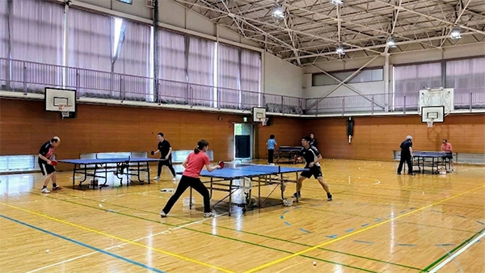

京都府亀岡市大井町・土曜朝の卓球タイム♪
📢 2026年も元気に活動中！参加希望の方は、事前にメールをお願いします！
2026年度、新しい趣味を始めたい方も大歓迎！
思いきり打って、笑って、気持ちよく汗を流しましょう。
「今年から始めたい」「久しぶりに打ちたい」大募集！教室のような専門指導はありませんが、みんなでワイワイ楽しく打てる環境です♪
20代からシニアまで幅広く参加！年齢を問わず、いろんな世代と一緒にラリーやゲーム練習が楽しめます。
自分の体調や予定に合わせて、無理なく・楽しく続けられる環境を大切にしています。

スマッシュ大井亀岡は、亀岡市大井町周辺で活動する卓球クラブです。
コーチはいませんが、初めての方もベテランの方も一緒になって、自由に和気あいあいと卓球を楽しんでいます！
| 場所 | 亀岡市立大井小学校 体育館 |
|---|---|
| 駐車場 | あり 🚗 お車でのご参加も大歓迎です！ |
| 日時 | 毎週土曜日 9:00 〜 11:30 |
| 参加費 | 【ビジター】1回 300円 【入会】年会費 3,500円 ＋ 保険料 |
| 対象 | 卓球を楽しみたい方なら誰でも！ （初心者からベテランまで大歓迎♪） |
| 使用球 | ニッタク「Jトップクリーントレ球」 ※日本製の高品質な練習球を使用しています！ |
| 持ち物 | ラケット、室内シューズ、飲み物、タオル ※お持ちでない方はご相談ください |
📍 アクセスマップ
JR嵯峨野線「並河駅」すぐそば！
駐車場も完備しているので、お車でも安心してお越しいただけます。
お名前・ご連絡先・卓球歴（初心者・ブランク等）を教えてくださいね！